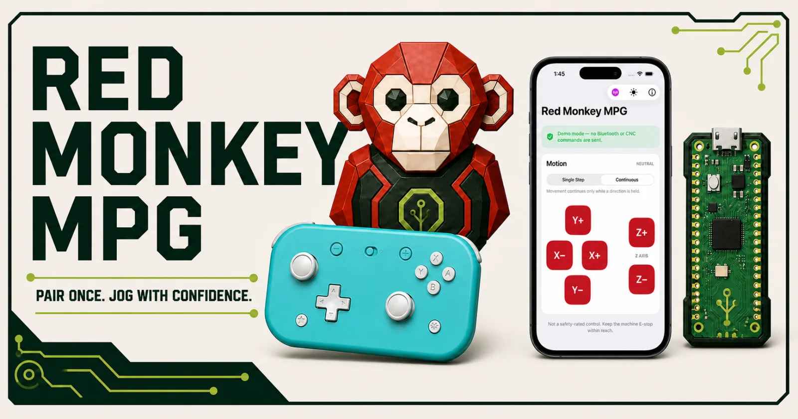

Raspberry Pi Pico 2 W firmware
Wireless CNC jogging,
your way.
Turn a Pico 2 W into a wireless USB jogging receiver for a supported CNC controller—using either a Bluetooth gamepad or the Red Monkey MPG iPhone app.
Checking the newest firmware release…

01
Choose one
Select your wireless controller
Each Pico runs one receiver image at a time. Choose how you want to control the machine.
Selected download
Gamepad receiver
Finding the newest gamepad firmware…
Preview release: Current firmware is intended for evaluation and controlled testing. Do not treat a release candidate as a commercially approved safety device.
02
About two minutes
Install the UF2 firmware
No compiler, Pico SDK, or command line is required.
- Disconnect the receiver from the CNC controller.
- Connect it only to a Mac or Windows computer.
- Use a data-capable Micro-USB cable.
- Download one UF2
Use the chooser above. Do not download GitHub’s “Source code” ZIP or TAR files.
- Enter BOOTSEL mode
Unplug the receiver. Hold its BOOTSEL button while reconnecting it to your computer, then release the button.
- Open the RPI-RP2 drive
Find RPI-RP2 in Finder under Locations on macOS, or in File Explorer under This PC on Windows.
- Copy the UF2 onto the drive
Drag the downloaded
.uf2file to RPI-RP2. The drive disappearing after the copy is normal—the receiver is rebooting. - Wait, unplug, then commission
Allow about 10 seconds. Unplug the receiver from the computer and follow the setup for your selected controller below.
Optional: verify the download checksum
GitHub displays a SHA-256 digest for each firmware asset. Compare it with the digest shown in the selected download panel or calculate it locally.
shasum -a 256 ~/Downloads/*.uf2Get-FileHash "$HOME\Downloads\your-file.uf2" -Algorithm SHA25603
Connect and operate
Set up your controller
Follow the tab matching the firmware you installed.
First-time setup
Pair and configure the gamepad
- Connect the Pico receiver to a Mac or Windows computer.
- Open the Red Monkey MPG Configurator in desktop Chrome or Edge.
- Pair the 8BitDo Lite 2 in D mode, select the MASSO profile, validate, and save.
- Finish and disconnect setup. Motion stays locked while the configurator is connected.
- Connect the receiver to the CNC USB keyboard port and press the gamepad Home button once.
Default MASSO controls
Gamepad quick reference
- L2 held
- Motion enable / dead-man
- Left stick
- X and Y jogging
- Right stick ↑ ↓
- Z jogging
- R2 + L2
- Continuous jog
- A
- Cycle step size
- B
- Release all pendant output
Only one axis is emitted at a time. Center both sticks before changing axes.
First-time setup
Connect the iPhone app
- Connect the receiver to the CNC USB keyboard port only after computer-side testing passes.
- Open Red Monkey MPG and tap the antenna button.
- Select Red Monkey MPG and accept the iOS pairing prompt if shown.
- Select the MASSO CNC profile.
- Wait until the app reports connected and displays the motion controls.
App controls
Mobile quick reference
- Single Step
- One bounded step per tap
- Continuous
- Moves only while held
- X− / X+
- X-axis movement
- Y− / Y+
- Y-axis movement
- Z− / Z+
- Z-axis movement
- Lift finger
- Release movement
Backgrounding or locking the app, Bluetooth loss, and receiver reset release USB keyboard output.
04
Required
Validate before machine use
Perform these checks with cutting energy disabled, the travel area clear, a low jog feed, and the physical E-stop accessible.
- Every axis and direction matches the CNC display and physical movement.
- Only one axis moves, even with diagonal or multi-touch input.
- Releasing the dead-man, stick, or phone direction stops movement.
- Bluetooth disconnect and receiver power loss release movement.
- Motion does not resume after reconnect until all controls are neutral.
- Step-size changes match the value visible on the CNC controller.
Stop and remove the receiver from service if any check fails.
05
Troubleshooting
Common questions
RPI-RP2 does not appear
Hold BOOTSEL before reconnecting the receiver. Try a known-good data cable and a direct computer USB port instead of a hub.
The drive disappears after copying
That is expected. The Pico automatically leaves boot mode and starts the newly installed firmware.
The gamepad receiver flashes quickly
It is connected but waiting for neutral. Release L2, R2, and all buttons, then center both sticks.
The iPhone cannot find the receiver
Confirm the mobile receiver UF2 is installed, power-cycle the Pico, enable Bluetooth, and connect from the app’s antenna menu.
The CNC does not move
Confirm the correct firmware is installed, the CNC is on its jog screen, jog feed is above zero, and setup/demo mode is not active.
Movement is unexpected
Use the physical E-stop, disconnect the receiver, and do not use it again until its firmware, configuration, and machine behavior are checked.